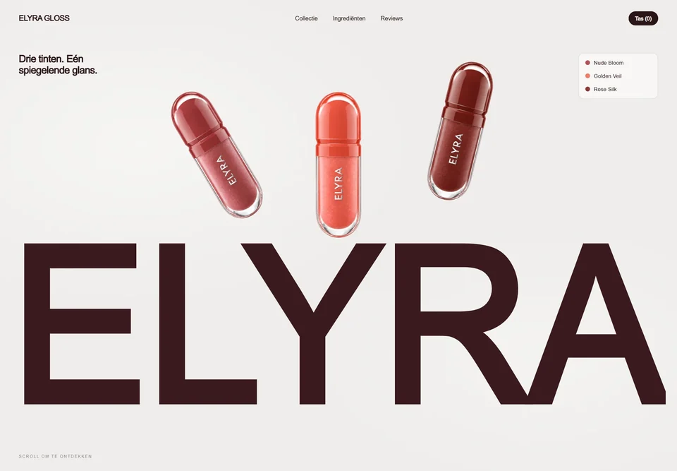
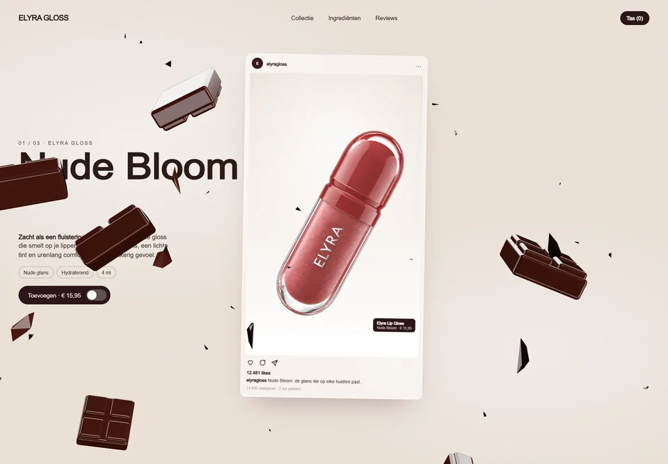
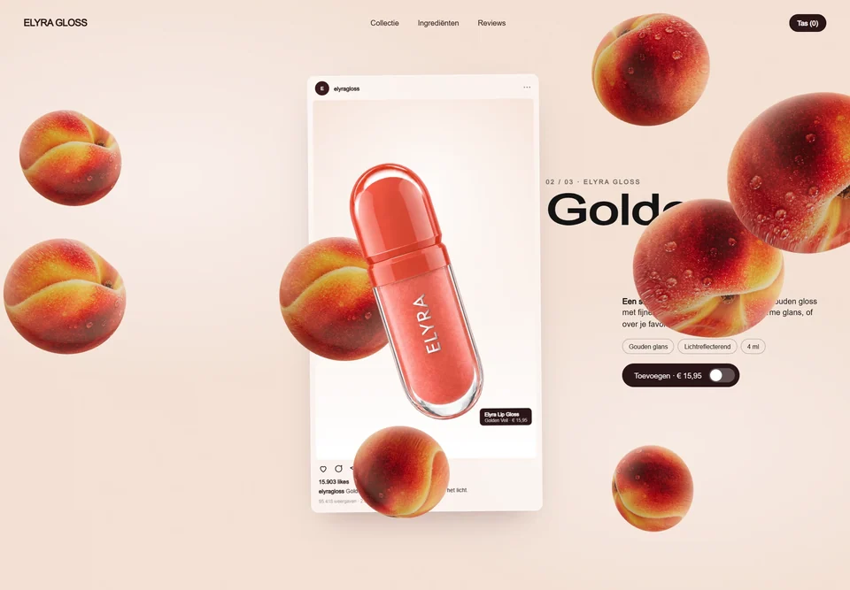
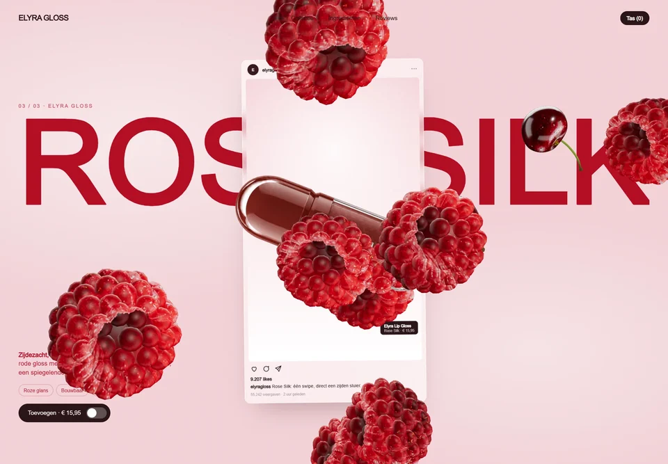
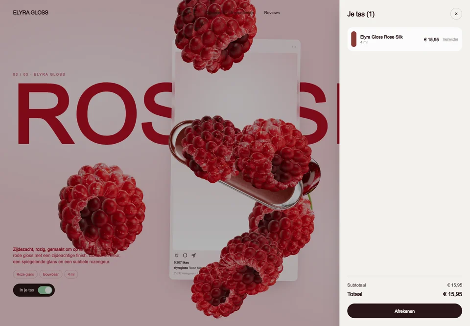
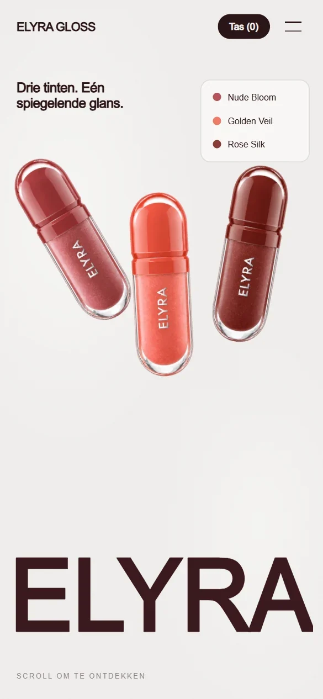
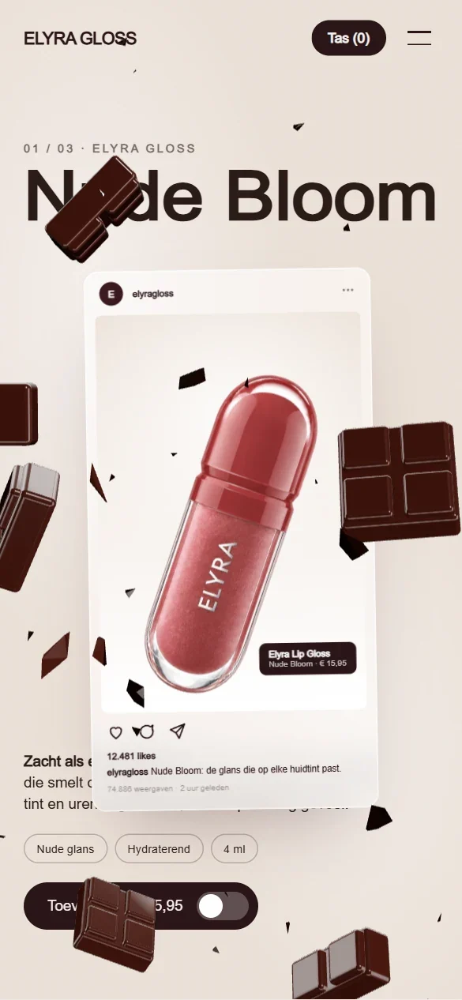

Elarae Studio / Beauty · Interactive commerce concept / Case study
ELYRA GLOSS
Een eigen signatuur. Een heldere route.
Een expressieve website, opgebouwd rond aandacht, oriëntatie en actie.
De uitdaging was om de uitstraling van een beautycampagne te verbinden met een begrijpelijke winkelervaring. Daarom krijgen bewegende glossproducten de hoofdrol, terwijl productinformatie en winkelacties herkenbaar blijven. Uitgewerkt zijn de productscènes, de winkelinteracties en de mobiele presentatie.
De route achter het beeld.
De montage volgt drie beslissingen: eerst herkenning opbouwen, vervolgens de aandacht richten en tot slot een handeling bevestigen. De interface blijft in beeld, zodat ook de bediening leesbaar is.
De ontwerpaanpak in beeld
De route in beeld.Een montage van de bestaande schermen en projectbeelden.
22 sec. · Zonder geluid · Werkelijke projectbeeldenBekijk het videoconcept & storyboard
- Herkenning opbouwen
Een langzame push-in op de homepage toont hoe woordbeeld, compositie en kleur de eerste indruk bepalen.
- Aandacht richten
De eerste productscène brengt presentatie en informatie samen. Eén onderwerp krijgt de aandacht.
- Samenhang behouden
Een overgang naar de volgende scène laat zien hoe de visuele identiteit herkenbaar blijft terwijl de inhoud wisselt.
- Interactie verduidelijken
De productkaart en toevoegknop tonen hoe de bezoeker van kijken naar kiezen kan gaan.
- De route afronden
De winkelmand maakt de selectie zichtbaar. Een korte terugkeer naar het merkbeeld sluit de showcase af.
Cinematografie. Volg de bestaande interface met kleine push-ins en rustige overgangen. Iedere uitsnede moet een ontwerpbeslissing verduidelijken. De huidige montage gebruikt vastgelegde websiteschermen; het storyboard beschrijft de richting voor een verdere videoproductie.
Eerst herkenning, dan richting.
Het grote woordbeeld bepaalt het karakter van de opening. Kleinere labels en een compacte navigatie houden de functie leesbaar. Die verdeling voorkomt dat alle elementen tegelijk om aandacht vragen.

Een vaste rangorde
Inter Tight verbindt grote koppen met kleine informatielabels. Dezelfde verhouding keert terug in iedere scène en geeft houvast wanneer het beeld verandert.
Kleur markeert een overgang
Een andere achtergrond kondigt een nieuw onderwerp aan. De neutrale basis en bordeauxrode accenten bewaren de samenhang.
Bediening naast beweging
Het 3D-canvas draagt de compositie. Knoppen en navigatie blijven afzonderlijke HTML-elementen, zodat beeld en bediening elkaar niet blokkeren.
Beweging die informatie ordent.
Elarae Studio gebruikt een vaste presentatieruimte om opeenvolgende onderwerpen te verbinden. Beeld, achtergrond en tekst volgen één tijdlijn. De compositie verandert; de manier waarop informatie wordt gelezen blijft herkenbaar.


Minder zoeken op het beslismoment. De beschrijving, kenmerken en toevoegknop staan naast de productkaart.
Herkenbare bediening tijdens het verkennen. De positie van informatie en actie blijft herkenbaar terwijl kleur en beeld veranderen.
Waarde voor het merk
Een eigen visuele signatuur krijgt meer betekenis wanneer ook het gedrag van de website daarop aansluit. Hier wordt die samenhang uitgewerkt tot op het niveau van overgangen en selectiestatus.
Waarde voor de bezoeker
De scrollroute biedt een volgorde; directe navigatie biedt een kortere weg. Beide komen uit bij dezelfde informatie en acties. Zo blijft de verhaallijn een keuze, geen verplichte omweg.
Informatie op het moment van kiezen.
Een korte toelichting, kenmerken, prijs en actie staan bij elkaar. Verdieping volgt verder op de pagina. Die ordening houdt de eerste blik overzichtelijk en geeft praktische vragen een eigen plek.


De selectiestatus op de knop en het overzicht in de winkelmand bevestigen de handeling. De rechter opname toont de winkelmand binnen dezelfde pagina.
Een duidelijke vervolgstap
Na selectie verandert de toevoegknop van status. De winkelmand toont wat is gekozen en hoe de korting is berekend. Elke handeling krijgt zichtbare feedback, zodat de interface haar eigen werking uitlegt.
Opnieuw gecomponeerd voor mobiel.
Een kleiner scherm vraagt om andere verhoudingen. Daarom kregen schaal, posities, tekst en acties eigen mobiele instellingen. De hiërarchie blijft herkenbaar; de compositie volgt de beschikbare ruimte.


Het compacte menu houdt de route bereikbaar. Instellingen voor minder beweging en een terugval bij een niet-startend canvas helpen de inhoud toegankelijk te houden.
De samenhang zit in de keuzes.
- Samenhang tussen identiteit en interactie
- Scrollgestuurde informatieopbouw
- Een vaste hiërarchie voor presentatie en actie
- Zichtbare feedback bij productselectie
- Afzonderlijke mobiele composities
- Ondersteuning voor minder beweging
Van ontwerp naar uitvoering.
De uitvoering houdt navigatie, inhoud en selectiestatus op elkaar afgestemd. De onderstaande middelen ondersteunen die samenhang.
Een concreet uitvoeringsbesluit
Beweging en bediening krijgen een eigen laag.
- ScrollpositieBepaalt het actieve onderwerp.
- Gedeelde tijdlijnStemt beeld, achtergrond en inhoud af.
- HTML-interfaceHoudt navigatie en winkelacties bedienbaar.
Het 3D-canvas onderschept geen klikken. Knoppen en navigatie blijven afzonderlijke HTML-elementen. Zo ondersteunt de techniek de compositie én het gebruik.
Strategie
- Digitale vertaling van de merkidentiteit
- Opbouw van ontdekking naar actie
- Prioritering van informatie per scène
Design
- Visuele hiërarchie en designsysteem
- Interactie- en bewegingsrichting
- Composities voor desktop en mobiel
Development
- Gedeelde tijdlijn voor beeld en interface
- Bedienbare navigatie naast het 3D-canvas
- Selectiestatus en winkelmandlogica
Een signatuur die doorwerkt in de bediening.
Elarae Studio verbindt een uitgesproken visuele richting met een begrijpelijke structuur. Beweging verdeelt de aandacht; directe navigatie biedt een kortere route. Selectiestatus en winkelmand houden de gemaakte keuzes zichtbaar.
Zelfstandig portfolio-concept, ontwikkeld als verkenning van merkbeleving, interactie en digitale retailervaring.